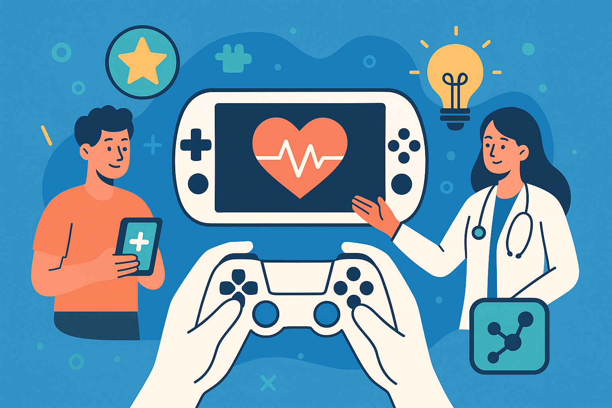

Innovation and Technology in Health - Games and Gamification

This repository hosts all the games developed by students in the Innovation and Technology in Health class in the master's program in Science, Technology, and Innovation in Health. All the games are produced using the Twine tool. The language used in the games is the responsibility of their authors, and most of them are in Brazilian Portuguese.
2025.1
- Na trilha da prevenção de Quedas: O jogo “Na Trilha de Prevenção de Quedas”, desenvolvido na plataforma Twine, tem como objetivo ensinar a definição de queda, identificar fatores de risco e orientar sobre medidas preventivas de forma interativa e acessível. Por meio da ludicidade, busca-se estimular reflexão e mudança de atitudes relacionadas à segurança no ambiente hospitalar e domiciliar.
- Missão Sustentável: Laboratório em Risco: O objetivo educativo é estimular nos jogadores uma mudança de atitude, tornando-os mais críticos e responsáveis pela gestão dos resíduos gerados em suas rotinas. A abordagem lúdica e interativa do Twine facilita a assimilação dos
conteúdos e promove aprendizagem significativa, conforme defendido por De
Freitas (2018) e Monteiro-Junior et al. (2022), que destacam a eficácia dos jogos
sérios na construção de saberes aplicados e no desenvolvimento de competências socioambientais.
- Entendendo a Dor e a DTM: O jogo sério “Entendendo a Dor e a DTM” foi desenvolvido com o objetivo de promover a educação em dor, utilizando uma narrativa interativa para
favorecer a reflexão e o autocuidado. O propósito é auxiliar pacientes e
estudantes a compreenderem que a dor não é sinónimo de lesão e que fatores
como stress, crenças e comportamentos influenciam diretamente a experiência
dolorosa.
- Socorrista em ação: Vidas em jogo: O jogo Socorrista em ação foi desenvolvido com o objetivo de promover o aprendizado prático e reflexivo sobre condutas básicas de primeiros socorros. Através de uma narrativa interativa, o jogador é colocado em cenários simulados onde precisa
tomar decisões rápidas e assertivas. Cada escolha gera consequências, permitindo que o jogador aprenda com acertos e erros.
- Um Sinal Estranho: O jogo tem a finalidade de informar aos jogadores o quanto é importante conhecer os sintomas da tuberculose. É uma doença grave, que permanece no cenário mundial. Apesar de ter tratamento e ter cura, o índice de casos no Brasil continua relevante. O SUS – Sistema Único de Saúde, é o único que trata a tuberculose no Brasil.